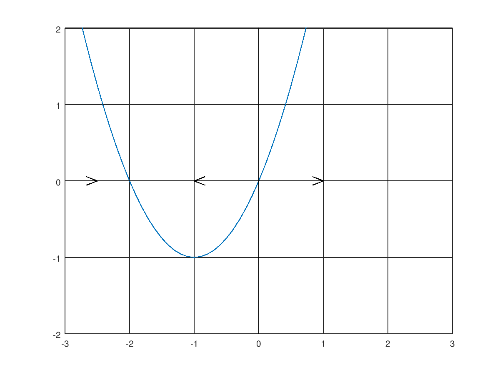
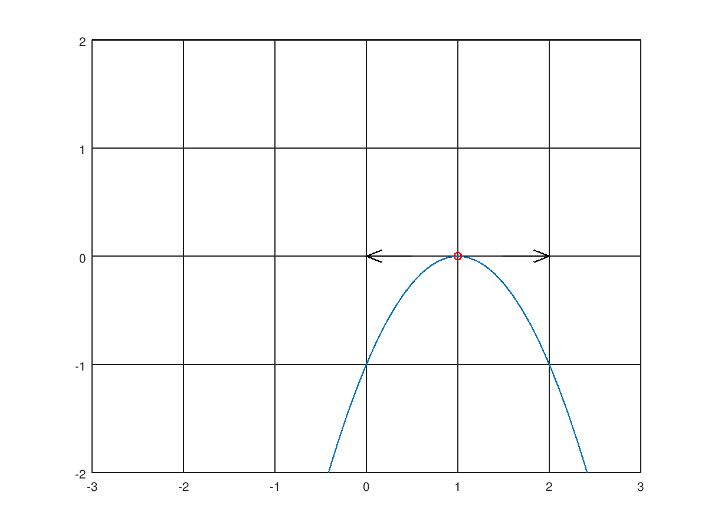
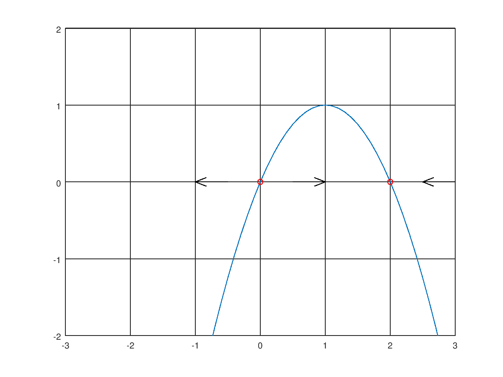
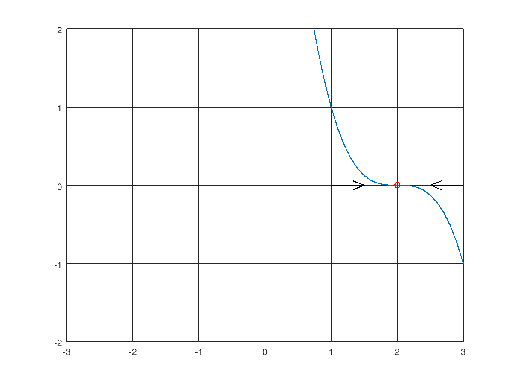
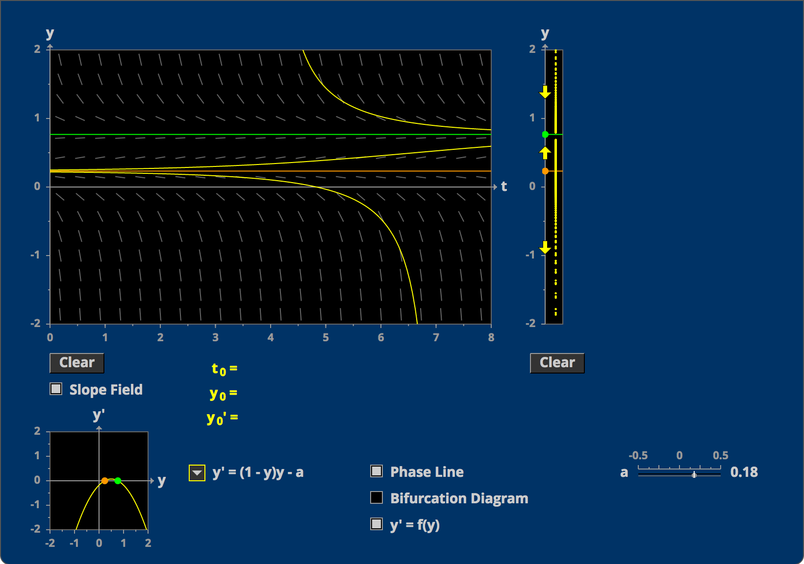

$$$\require{cancel}$$$




$$ \begin{align} {d\over dt} + 2x(t) &= 1 \\ {d\over dt} &= 1 - 2x(t)\\ \int {1\over 1-2x}\ dx &= \int 1\ dt \\ -{1\over 2} ln(1-2x(t)) &= t + C_0\\ ln(1-2x(t)) &= -2t + C_0\\ 1 - 2x(t) &= Ce^{-2t} \\ -2x(t) &= Ce^{-2t}-1 \\ x(t) &= \bbox[5px, border:2px solid black]{Ce^{-2t}+{1\over2}}\\ \end{align} $$
$$ \begin{align} {d\over dt}x(t) + 2x(t) &= 1 \\ {d\over dt}x(t)e^{2t} + 2x(t)e^{2t} &= e^{2t} \\ {d\over dt}\left(x(t)e^{2t}\right) &= e^{2t} \\ \int {d\over dt}\left(x(t)e^{2t}\right)\ dt &= \int e^{2t}\ dt \\ x(t)e^{2t} &= {1\over 2}e^{2t} + C \\ x(t) &= \bbox[5px, border:2px solid black]{{1\over 2} + Ce^{-2t}}\\ \end{align} $$
Regard RHS as $$$e^{0t}$$$, and assume solution takes the form $$$Ae^{0t}$$$:
$$
\begin{align}
{d\over dt}x(t) + 2x(t) &= e^{0t}\\
{d\over dt}Ae^{0t} + 2Ae^{0t} &= e^{0t}\\
0 + 2A &= 1 \\
A &= {1\over 2} \\
\end{align}
$$
$$\therefore x_p = {1\over 2}$$
Because we know that the solution for an equation of the form
$$${d\over dt}x(t) + kx(t) = 0$$$ is $$$x(t) = Ce^{-kt}$$$, we can add in a transient, and write the solution as:
$$
\bbox[5px, border:2px solid black]{{1\over 2} + Ce^{-2t}}
$$
This equilibrium is semi-stable.
$$x(t_{n+1}) = h(1-2x(t_n))+x(t_n)$$
| n | $$$t_n$$$ | $$$x(t_n)$$$ | $$$1-2x(t_n)$$$ | $$$h(1-2x(t_n))$$$ |
|---|---|---|---|---|
| 0 | 0 | 0 | 1 | 0.3333 |
| 1 | 0.3333 | 0.3333 | 0.3333 | 0.1111 |
| 2 | 0.6666 | 0.4444 | 0.1112 | 0.0371 |
| 3 | 0.9999 | 0.4815 |
Seems reasonable because $$${d\over dt}y(t) = (1-y(t))y(t)$$$ indicates that the population count stops changing in two places: in the event that the current population is the stable population (1 kilo-oryx) or zero (there are no oryxes). In the event that the population is greater than one kilo-oryx, we would expect the population to decline to the carrying capacity of 1 kilo-oryx, and in the event that the population is less than one kilo-oryx, we would expect the population to rise to the carrying capacity.
$$ \begin{align} y(1-y)-a &= 0 \\ y(1-y) &= a \\ y - y^2 &= a \\ -y^2 + y - a = 0 \\ \end{align} $$ $$ \therefore {-1\pm\sqrt{1-4a}\over -2} $$ We can see that: $$ \begin{align} &\text{0 roots:}\qquad a > {1\over 4}\\ &\text{1 root: }\qquad a={1\over4}\\ &\text{2 roots:}\qquad a < {1\over 4}\\ \end{align} $$
In the 1 root case, the critical point is $$$1\over 2$$$ and this point is semi-stable. In the two root case, the critical point occurs at $$$-1\pm\sqrt{1-4a}\over -2$$$ where $$$a<{1\over 4}$$$. The critical point at $$$-1+\sqrt{1-4a}\over -2$$$ is unstable, while the critical point at $$$-1-\sqrt{1-4a}\over -2$$$ is stable.
We can write the new equation like: $${d\over dt}y(t) = y(1-y)-0.1875$$ Solving for the zeroes we have: $$-y^2+y-0.1875 = 0$$ $${-1\pm\sqrt{1-4\cdot0.1875}\over -2}$$ $$\bbox[5px, border:2px solid black]{0.25, 0.75}$$ And therefore from (1b) we can conclude that the stable population is 750 oryx and the population below which the oryx population will crash is 250 oryx.

The equation is simply the equation for $$$a$$$: $$\bbox[5px, border:2px solid black]{-y^2+y = a}$$
We can write the roots in a new equation: $${d\over dt}y(t) = -\left(y-{3\over 4}\right)\left(y-{1\over 4}\right)$$ Substituting in terms of $$$u=y-{3\over 4}$$$: $$ \begin{align} {d\over dt}u(t) &= {d\over dt}\left(y(t)-{3\over 4}\right)\\ &= {d\over dt}y(t)\\ \end{align} $$ So we can directly substitute: $$ \begin{align} {d\over dt}u(t) &= -u(t)\left(u(t)+{1\over2}\right)\\ &= \bbox[5px, border:2px solid black]{-u(t)^2 - {1\over 2} u(t)} \\ \end{align} $$ By inspection, this is most certainly autonomous, as we can write: $$-u(t)^2 - {1\over 2}u(t) = {d\over dt}u(t)$$ which is in the form: $${d\over dt}u(t) = f(u(t))\quad \checkmark$$
If $$$u(t) = 0$$$: $$-0^2 - {1\over 2}(0) = 0\quad \checkmark$$
Linearize the equation to get $${d\over dt}u(t) = -{1\over 2}u(t)$$ Solving for $$$u(t)$$$: $$ \begin{align} {d\over dt}u(t) &= -{1\over 2}u(t)\\ \int {1\over u(t)}\ du(t) &= \int-{1\over 2}\ dt\\ ln(u(t)) &= -{1\over 2}t + C_0 \\ u(t) &= \bbox[5px, border:2px solid black]{Ce^{-{1\over 2}t}} \\ \end{align} $$
$$ \begin{align} y(10) - {3\over 4} &= Ce^{{-1\over2}10} \\ &= b\\ Ce^{-5} &= b \\ C &= be^{5}\\ u(t) &= be^{5}e^{-{1\over2}t}\\ &= be^{-{1\over2}t + 5}\\ \end{align} $$ Translating $$$u(t)$$$ back to $$$y(t)-y_0$$$: $$ \begin{align} u(t) &= be^{-{1\over2}t + 5}\\ y(t) - {3\over 4} &= be^{-{1\over2}t + 5}\\ y(t) &= \bbox[5px, border:2px solid black]{be^{-{1\over2}t + 5} + {3\over4}}\\ \end{align} $$ For the specific (11, 12) case: $$ \begin{align} y(11) &= \bbox[5px, border:2px solid black]{be^{-{11\over2} + 5} + {3\over4}}\\ y(12) &= \bbox[5px, border:2px solid black]{be^{-{12\over2} + 5} + {3\over4}}\\ \end{align} $$
$$$p(t),\ q(t)$$$ must not contain powers of $$$t$$$ greater than $$$$t^0$$$ (must be constant). This is because in order to write $$${d\over dt}x(t) = f(x(t))$$$, we cannot have factors of $$$t$$$ in the RHS.